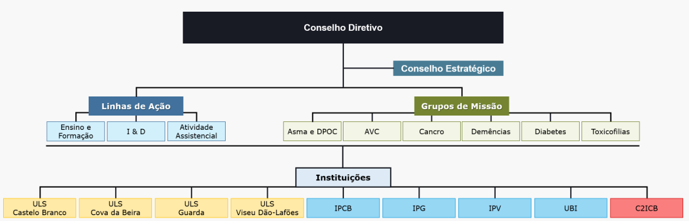

O CACB

O Centro Académico Clínico das Beiras, adiante designado CACB, tem como principal missão a promoção do desenvolvimento de melhorias na prestação de cuidados de saúde, das práticas de investigação e do ensino e formação de profissionais altamente qualificados, diferenciados e competentes. A visão do CACB assenta em ser um centro de excelência, fortemente capacitado para a formação e investigação na área da saúde, com base em dinâmicas de inovação, de competitividade e de qualidade capaz de contribuir para a melhoria dos indicadores de saúde das regiões envolvidas e do país.
Apresentação
Criado em Abril de 2017 através da Portaria n.º130/2017, o CACB –
Centro Académico Clínico das Beiras é um consórcio entre diversas
instituições de saúde e de ensino.
Ao reunir instituições de ensino superior com cursos na área
da saúde (Medicina, Ciências Farmacêuticas, Enfermagem, Ciências
Biomédicas, Optometria/Ciências da Visão, Tecnologias da Saúde),
bem como unidades de saúde dos vários tipos de cuidados
(primários, secundários e paliativos), o CACB está numa posição
ímpar para criar projetos integradores de excelência, com forte
impacto na prevenção da doença, bem como na prestação de cuidados
de saúde, em termos de qualidade, centrados no doente.
O CACB tem uma ideia precisa acerca da forma como deseja
evoluir e que será, muito claramente, no sentido de desenvolver
abordagens integradas de ação com impacto na prestação de cuidados
de saúde de todos os níveis, através de eixos que envolvem a
formação pré e pós-graduada bem como a formação da comunidade em
geral, e a investigação, inovação e desenvolvimento.
O Regime Jurídico dos Centros Académicos Clínicos -
Decreto-Lei 61/2018, de 3 de agosto, orienta o funcionamento dos
centros académicos clínicos como estruturas integradas de
Colaboração Assistencial, ensino e investigação clínica e de
translação, que associam unidades prestadoras de cuidados de
saúde, instituições de ensino superior e/ou instituições de
investigação públicas ou privadas.
Com o objetivo de estimular e apoiar o desenvolvimento
coordenado da atividade dos diferentes Centros Académicos Clínicos
foi criado o Conselho Nacional dos Centros Académicos Clínicos -
do Conselho de Ministros n.º 22/2016.
Consórcio
Membros do Consórcio:
- Instituto Politécnico de Castelo Branco, através da Escola Superior de Saúde Dr. Lopes Dias
- Instituto Politécnico da Guarda, através da Escola Superior de Saúde
- Instituto Politécnico de Viseu, através da Escola Superior de Saúde
- Unidade Local de Saúde de Castelo Branco
- Unidade Local de Saúde Cova da Beira
- Unidade Local de Saúde da Guarda
- Unidade Local de Saúde Viseu Dão-Lafões
- Universidade da Beira Interior, através da Faculdade de Ciências da Saúde e do Centro de Investigação em Ciências da Saúde
A nível organizacional o CACB conta com dois Conselhos: o Conselho
Diretivo, com capacidade de decisão, e o Conselho Estratégico, com
papel orientador da ação. Foram criadas duas Comissões: a Comissão
de Ensino e Formação Pré e Pós-Graduada (CEF) e a Comissão de
Investigação e Desenvolvimento (CID), constituídas por
profissionais nomeados de todas as instituições do consórcio, para
trabalharem em conjunto nestas temáticas.
À data atual o CACB é constituído da seguinte forma:
Conselho Diretivo:
- Daniel Marques da Silva, em representação da ESSV/IPV;
- Eduardo Luís Almeida e Melo, em representação do ULSVDL.
- João José Casteleiro Alves, em representação do ULSCBeira;
- José Nunes, em representação da ULSCB;
- Maria Hermínia Nunes Barbosa, em representação da ESS/IPG;
- Miguel Castelo-Branco Craveiro de Sousa, Presidente do Conselho Diretivo, em representação da FCS-UBI;
- Nélia Paula dos Santos Faria, em representação da ULSG;
- Rute Sofia dos Santos Crisóstomo, em representação da ESALD/IPCB;
Conselho Estratégico:
- António Fernando Correia de Campos, em representação da ULSVDL;
- António João Figueiredo Gomes, em representação da ULSCBeira;
- António Pinto Dias Rocha, em representação da CIM Beiras e Serra da Estrela;
- Carlos Casteleiro, em representação da UBI;
- Eduardo João Abrantes Pereira, em representação da ULSCB;
- Fernando Carvalho Rodrigues, em representação da ULSG;
- Fernando Marques Jorge, em representação da CIM Beira Baixa;
- Francisco Henrique Moura George, em representação do Ministério da Ciência, Tecnologia e Ensino Superior;
- Francisco Manuel Elias, em representação do Ministério da Saúde;
- João Pedro Pimentel, em representação da ARS Centro;
- José Manuel Preto Ribeiro, em representação do IPCB;
- Paula Isabel Teixeira Gonçalves Coutinho Borges, em representação do IPG;
- Paulo Jorge dos Santos Sousa, Presidente do Conselho Estratégico, em representação do IPV;
- Paulo Jorge Catalino de Almeida Ferraz, em representação da CIM Viseu Dão Lafões;/li>
- Membro Cooptado, Ana Palmeira de Oliveira;
- Membro Cooptado, Célia Reis.
- Membro Cooptado, Susana Teixeira;
Organograma CACB
Siglas:
- C2ICB – Centro de Coordenação de Investigação Clínica das Beiras;
- CEF - Comissão de Ensino e Formação Pré e Pós-Graduada;
- CID - Comissão de Investigação e Desenvolvimento;
- IPCB - Instituto Politécnico de Castelo Branco;
- IPG - Instituto Politécnico da Guarda;
- IPV - Instituto Politécnico de Viseu;
- UBI - Universidade da Beira Interior - FCS Faculdade de Ciências da Saúde / CICS-UBI (Centro de Investigação em Ciências da Saúde);
- ULSCB - Unidade Local de Saúde de Castelo Branco;
- ULSCBeira - Unidade Local de Saúde da Cova da Beira;
- ULSCDL - Unidade Local de Saúde de Viseu Dão-Lafões;
- ULSG - Unidade Local de Saúde da Guarda;
Visão e Missão
A Visão estratégica do CACB está definida num sentido claro:
“Ser um Centro de Excelência, fortemente capacitado para a
formação e investigação na área da saúde, com base em dinâmicas de
inovação e competitividade, qualidade, eficiência e eficácia de
processos, e que contribua para a melhoria dos indicadores de
saúde das regiões envolvidas e do país.”
A Missão do CACB, no âmbito referencial da legislação ligada
à sua criação, consiste em:
“Assumir um dever público tripartido integrado, de elevado rigor,
qualidade e responsabilidade social em que se inclui:
Ensino pré- e pós-graduado, bem como treino e formação de
profissionais de saúde;
Investigação na área da saúde, com impacto prático nacional
e internacional;
Reflexo na prestação de cuidados de saúde de elevada
eficiência, centrados no doente.”